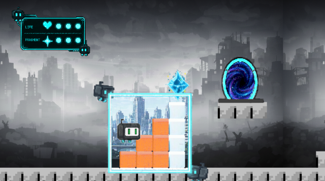
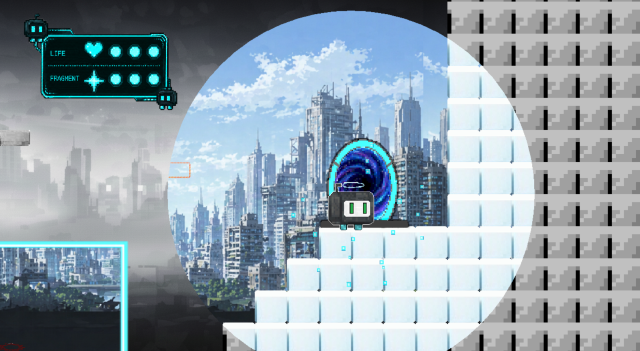
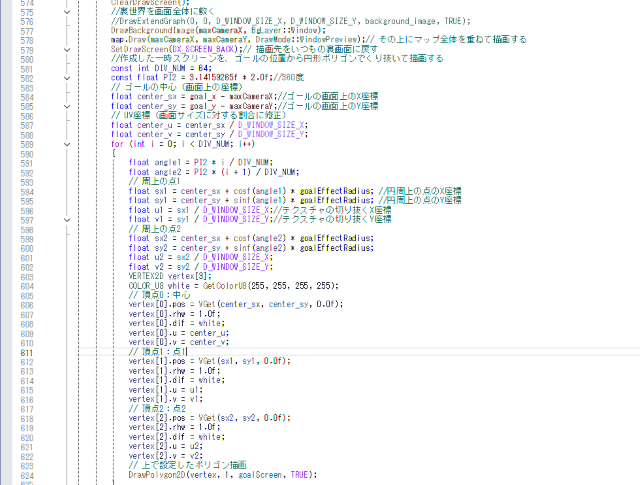
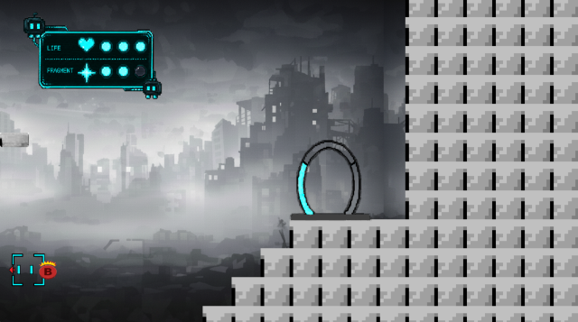
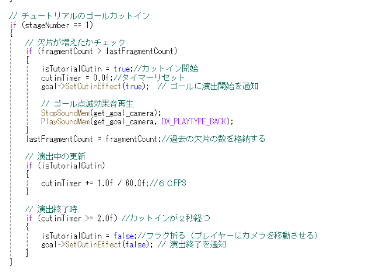
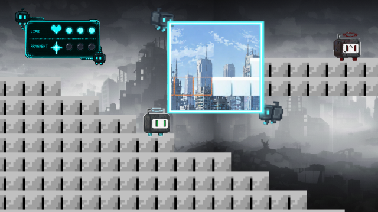
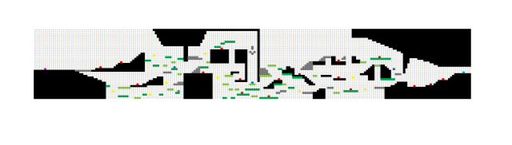

作品概要
こちらのゲームは窓を操作し、触れれない足場を実体化して３つの欠片を拾いゴールを目指すゲームです。
窓をブロックにかざしシャッターを切ることでブロックが実体化しその上を歩くことができます
うまく窓を活用してかけらを探し出しゴールを目指そう


こちらのゲームは窓を操作し、触れれない足場を実体化して３つの欠片を拾いゴールを目指すゲームです。
窓をブロックにかざしシャッターを切ることでブロックが実体化しその上を歩くことができます
うまく窓を活用してかけらを探し出しゴールを目指そう

横スクロールアクションゲーム
Visual Studio/C++
2025/4月～6月
4人
ステージマップ作成,チュートリアル作成
https://drive.google.com/file/d/13Zidx4mcwzImVytf20vg8LnRSOZtAFtv/view?usp=drive_link
「2つの背景があるゲーム」を主軸にチームが作りたいものを取り入れやすい２D横スクロールのゲームになりました。
タイムやスコアはなくプレイヤーにじっくりと考えさせる時間を与えながら、長く楽しみが続くことにこだわり,
マップの長さ、ギミック同士の距離などを慎重に考え実装しました。
思いついたことはすぐに試して、結果をチームに見せてこのゲームに必要かどうかを相談することに挑戦した。
その結果、あいまいな表現による議論の停滞を防ぎ、追加しない時はその理由を聞き、
このゲームでプレイヤーに何をさせたいのかをチーム内で明確にして、新たな提案を生み出すヒントになった。
ゴールした瞬間に裏にあった背景に切り替えることでゴールの達成感を感じさせることにこだわった。
2つの世界があることに注目させたいためゴール時にはすぐリザルト画面に遷移せず、
ゴールから徐々に広がる演出を取り入れ、より達成感を得ることをこだわりました。


「欠片を集めることがゴール解放の条件である」と伝わりやすくするため、
欠片を取得した際にカメラをゴールへ移動させ、状態が変化する演出を入れました。
これにより演出を通じて視覚的にゲームのクリア条件が伝わるようになりました。


できるだけ窓を使わない箇所がないように作り、６ステージという短くなく、長すぎない手ごたえを感じることができるマップを目指しました。
スーパーマリオのブロックと敵の距離でプレイヤーの道しるべとなる配置の仕方やソニックの複数ある未知の分岐の仕方、ジャンプキングなどの独特なマップ構成を参考にしつつ、
自身のゲームに合ったギミックの配置などをこだわり、ゴールまでに飽きさせないことを目標につくりました。


今回の制作を通じて地味で時間がかかる画像やマップの作製を作り切る根気強さ、プレイヤー視点に立ち、ゲームの世界観、独自のルールを伝える発想力が鍛えられたと思います。
また、追加要素を企画する際に作業工数の増加とそれに見合うリターン、そして世界観との整合性を事前にすり合わせることで
余計な手戻りを省き、より細部までこだわった作品作りができることを学びました。